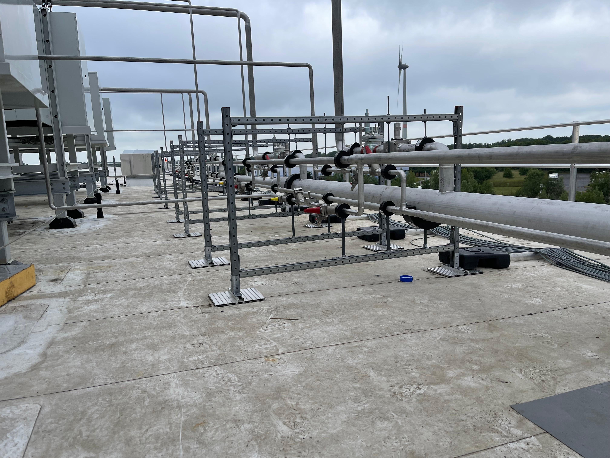
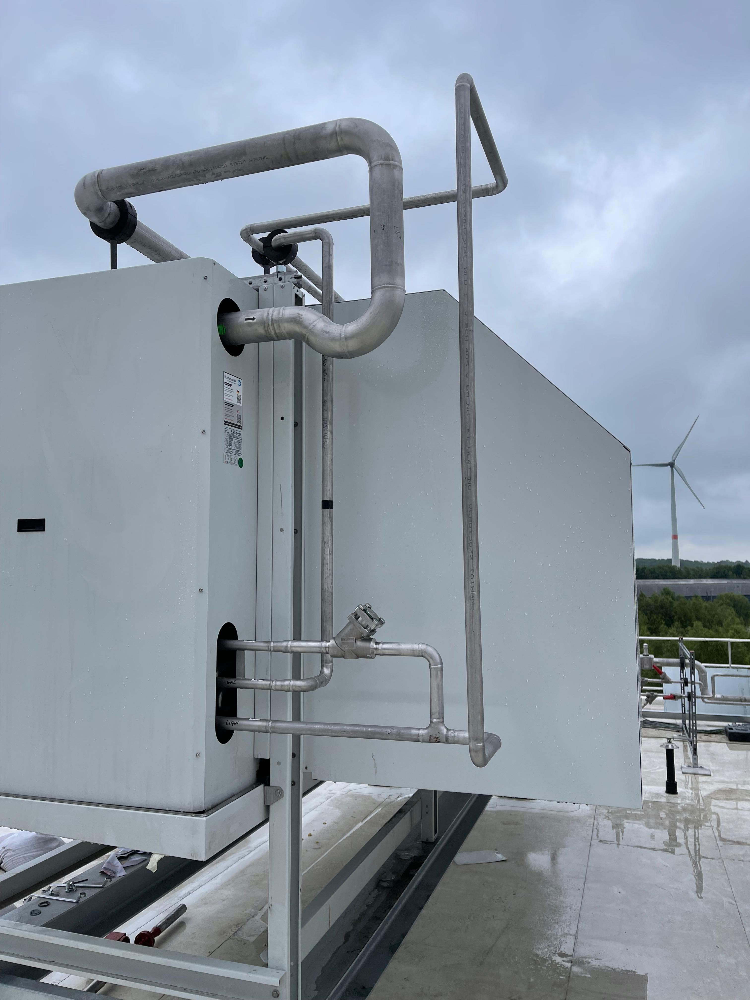

Qualidade de Execução
Foco na integridade das soldagens, precisão da montagem e conformidade técnica em todas as etapas do projeto.
A CR Welding fornece serviços especializados de fabricação, montagem e soldagem de tubulações industriais e estruturas metálicas, com projetos executados na Bélgica, Holanda, Alemanha e outros mercado Europeu.
OPERAÇÃO




Foco na integridade das soldagens, precisão da montagem e conformidade técnica em todas as etapas do projeto.
Equipes preparadas para atuar em sistemas industriais complexos, desde utilidades e refrigeração até processos produtivos críticos.
Aplicação rigorosa de procedimentos de segurança para proteger pessoas, instalações e cronogramas de execução.
Atuação orientada para resultados, comunicação transparente e cumprimento dos objetivos definidos para cada projeto.
MODELO CORPORATIVO